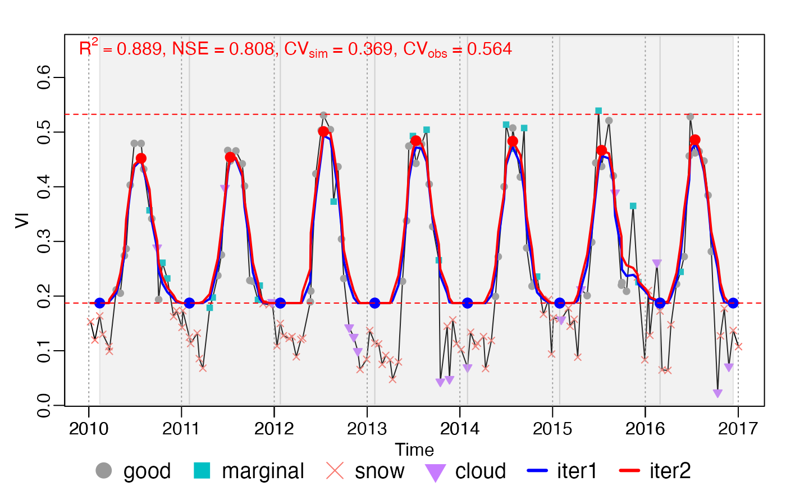
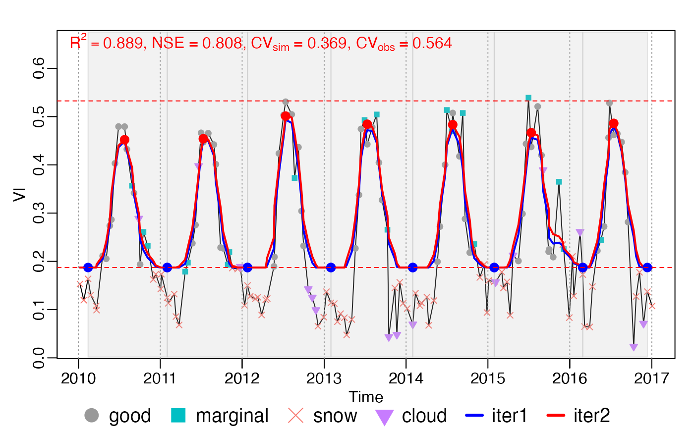
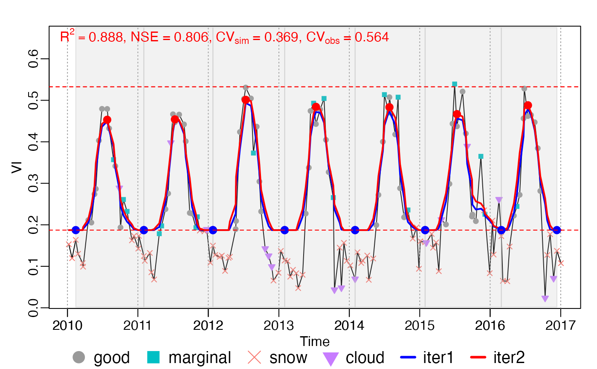

Growing season division
Source:R/deprecated_season.R, R/season_mov.R, R/season_roughFit.R
season.RdDivide growing seasons according to rough fitting (rFUN) result .
For season, rough fitting is applied for whole.
For season_mov rough fitting is applied in every year, during which
maxExtendMonth is extended.
Divide growing seasons according to rough fitting (rFUN) result .
For season, rough fitting is applied for whole.
For season_mov rough fitting is applied in every year, during which
maxExtendMonth is extended.
season( INPUT, rFUN, wFUN, iters = 2, wmin = 0.1, lambda, nf = 3, frame = floor(INPUT$nptperyear/5) * 2 + 1, minpeakdistance = NULL, ypeak_min = 0.1, r_max = 0.2, r_min = 0.05, rtrough_max = 0.6, MaxPeaksPerYear = 2, MaxTroughsPerYear = 3, calendarYear = FALSE, adj.param = TRUE, rm.closed = TRUE, is.continuous = TRUE, .check_season = TRUE, verbose = FALSE, ... ) stat_season(INPUT, d_fit) roughFit( INPUT, options = list(), frame = floor(INPUT$nptperyear/5) * 2 + 1, ... )
Arguments
| INPUT | A list object with the elements of |
|---|---|
| rFUN | Rough curve fitting function, can be one of |
| wFUN | weights updating function, can be one of |
| iters | How many times curve fitting is implemented. |
| wmin | Double, minimum weigth (i.e. weight of snow, ice and cloud). |
| lambda | The smoothing parameter of |
| nf | The parameter of |
| frame | The parameter of |
| minpeakdistance | Numberic, in the unit of points (default as
|
| ypeak_min |
|
| r_max | Similar as |
| r_min | Threshold is defined as the difference of peak value with trough value. There are two threshold (left and right). The minimum threshold should be greater than r_min. |
| rtrough_max |
|
| MaxPeaksPerYear | This parameter is used to adjust lambda in iterations. If PeaksPerYear > MaxPeaksPerYear, then lambda = lambda*2. |
| MaxTroughsPerYear | This parameter is used to adjust lambda in iterations. If TroughsPerYear > MaxTroughsPerYear, then lambda = lambda*2. |
| calendarYear | If true, only one static calendar growing season will be returned. |
| adj.param | Adjust rough curve fitting function parameters automatically, if too many or to less peak and trough values. |
| rm.closed | boolean. Whether check the two closest peaks (or troughs). |
| is.continuous | boolean. Whether the input is continuous? This parameter is for fluxsite site-year data. |
| .check_season | not used (only for debug) |
| verbose | whether to print |
| ... | ignored. |
| d_fit | A data.frame with the columns of |
| options | see details |
Value
fit: A data.table of Rough fitting result, with the columns of (t,y,witer1, ...,witerN,ziter1, ...,ziterN).dt: A data.table of Growing season dividing information, with the columns of (beg,peak,end,y_beg,y_peak,y_end,len,year,season,flag).
fit: A data.table of Rough fitting result, with the columns of (t,y,witer1, ...,witerN,ziter1, ...,ziterN).dt: A data.table of Growing season dividing information, with the columns of (beg,peak,end,y_beg,y_peak,y_end,len,year,season,flag).
Details
Before dividing growing season, INPUT should be added a year in head
and tail first by add_HeadTail.
Finally, use findpeaks() to get local maximum and local minimum values.
Two local minimum define a growing season.
If two local minimum(maximum) are too closed, then only the smaller(biger)
is left.
Before dividing growing season, INPUT should be added a year in head
and tail first by add_HeadTail.
Finally, use findpeaks() to get local maximum and local minimum values.
Two local minimum define a growing season.
If two local minimum(maximum) are too closed, then only the smaller(biger)
is left.
options
rFUNRough curve fitting function, can be one ofsmooth_wSG(),smooth_wWHIT()andsmooth_wHANTS().wFUNweights updating function, can be one ofwTSM(),wChen(),wBisquare()andwSELF().itersHow many times curve fitting is implemented.wminDouble, minimum weigth (i.e. weight of snow, ice and cloud).lambdaThe smoothing parameter ofsmooth_wWHIT(). Forseason_mov(), if lambda isNULL,init_lambda()will be used. Generally, it was set as 10000, 15, and 5 for daily, 8-day and 16-day inputs respectively.nfThe parameter ofsmooth_wHANTS(), number of frequencies to be considered above the zero frequency.frameThe parameter ofsmooth_wSG(), moving window size. Suggested by TIMESAT, defaultframe = floor(nptperyear/7)*2 + 1.minpeakdistanceNumberic, in the unit of points (default asnptperyear/12). The minimum distance of two peaks. If the distance of two maximum extreme value less thanminpeakdistance, only the real maximum value will be left.ypeak_miny_peak >= ypeak_minr_minThreshold is defined as the difference of peak value with trough value. There are two threshold (left and right). The minimum threshold should be greater than r_min.r_maxSimilar asr_min, The maximum threshold should be greater thanr_max.rtrough_maxytrough <= rtrough_max*A, A is the amplitude of y.MaxPeaksPerYear This parameter is used to adjust lambda in iterations. If PeaksPerYear > MaxPeaksPerYear, then lambda = lambda*2.
MaxTroughsPerYear: This parameter is used to adjust lambda in iterations. If TroughsPerYear > MaxTroughsPerYear, then lambda = lambda*2.calendarYear: If true, only one static calendar growing season will be returned.adj.param: Adjust rough curve fitting function parameters automatically, if too many or to less peak and trough values.rm.closed: boolean. Whether check the two closest peaks (or troughs).is.continuous: boolean. Whether the input is continuous? This parameter is for fluxsite site-year data..check_season: not used (only for debug)verbose: whether to printoptions_seasoninto console?
See also
Examples
data("CA_NS6") d <- CA_NS6 nptperyear <- 23 INPUT <- check_input(d$t, d$y, d$w, QC_flag = d$QC_flag, nptperyear = nptperyear, south = FALSE, maxgap = nptperyear / 4, alpha = 0.02, wmin = 0.2 ) # plot_input(INPUT) wFUN <- "wTSM" # all year as a whole options = list(rFUN = smooth_wWHIT, wFUN = wFUN, lambda = 10) brks <- season(INPUT, lambda = 10) plot_season(INPUT, brks, d)  brks2 = season_input(INPUT, options) all.equal(brks2, brks) #> [1] TRUE c(d_fit, info_peak) %<-% roughFit(INPUT) d_season = find_season.peaks(d_fit, info_peak) c(t, ypred) %<-% d_fit[, .(t, ziter2)] d_season = find_season.default(ypred, t) all.equal(brks$dt, d_season) #> [1] TRUE # opt <- .options$season # brks$fit - d_fit # function passed test # curve fitting by year brks_mov <- season_mov(INPUT, options = list( rFUN = "smooth_wWHIT", wFUN = wFUN, lambda = 10, r_min = 0.05, ypeak_min = 0.05, verbose = TRUE ) ) #> [season_mov] running 1 ... #> iloop = 1: lambda = 10.0, ntrough_PerYear = 1.53, npeak_PerYear = 1.02 #> [season_mov] running 2 ... #> iloop = 1: lambda = 10.0, ntrough_PerYear = 1.33, npeak_PerYear = 1.00 #> [season_mov] running 3 ... #> iloop = 1: lambda = 10.0, ntrough_PerYear = 1.33, npeak_PerYear = 1.00 #> [season_mov] running 4 ... #> iloop = 1: lambda = 10.0, ntrough_PerYear = 1.33, npeak_PerYear = 1.00 #> [season_mov] running 5 ... #> iloop = 1: lambda = 10.0, ntrough_PerYear = 1.33, npeak_PerYear = 1.00 #> [season_mov] running 6 ... #> iloop = 1: lambda = 10.0, ntrough_PerYear = 1.33, npeak_PerYear = 1.00 #> [season_mov] running 7 ... #> iloop = 1: lambda = 10.0, ntrough_PerYear = 1.50, npeak_PerYear = 1.00 plot_season(INPUT, brks_mov)data("CA_NS6") d <- CA_NS6 nptperyear <- 23 INPUT <- check_input(d$t, d$y, d$w, QC_flag = d$QC_flag, nptperyear = nptperyear, south = FALSE, maxgap = nptperyear / 4, alpha = 0.02, wmin = 0.2 ) # plot_input(INPUT) wFUN <- "wTSM" # all year as a whole options = list(rFUN = smooth_wWHIT, wFUN = wFUN, lambda = 10) brks <- season(INPUT, lambda = 10) plot_season(INPUT, brks, d)  brks2 = season_input(INPUT, options) #> iloop = 1: lambda = 10.0, ntrough_PerYear = 1.14, npeak_PerYear = 1.00 all.equal(brks2, brks) #> [1] TRUE c(d_fit, info_peak) %<-% roughFit(INPUT) #> iloop = 1: lambda = 10.0, ntrough_PerYear = 1.14, npeak_PerYear = 1.00 d_season = find_season.peaks(d_fit, info_peak) c(t, ypred) %<-% d_fit[, .(t, ziter2)] d_season = find_season.default(ypred, t) all.equal(brks$dt, d_season) #> [1] TRUE # opt <- .options$season # brks$fit - d_fit # function passed test # curve fitting by year brks_mov <- season_mov(INPUT, options = list( rFUN = "smooth_wWHIT", wFUN = wFUN, lambda = 10, r_min = 0.05, ypeak_min = 0.05, verbose = TRUE ) ) #> [season_mov] running 1 ... #> iloop = 1: lambda = 10.0, ntrough_PerYear = 1.53, npeak_PerYear = 1.02 #> [season_mov] running 2 ... #> iloop = 1: lambda = 10.0, ntrough_PerYear = 1.33, npeak_PerYear = 1.00 #> [season_mov] running 3 ... #> iloop = 1: lambda = 10.0, ntrough_PerYear = 1.33, npeak_PerYear = 1.00 #> [season_mov] running 4 ... #> iloop = 1: lambda = 10.0, ntrough_PerYear = 1.33, npeak_PerYear = 1.00 #> [season_mov] running 5 ... #> iloop = 1: lambda = 10.0, ntrough_PerYear = 1.33, npeak_PerYear = 1.00 #> [season_mov] running 6 ... #> iloop = 1: lambda = 10.0, ntrough_PerYear = 1.33, npeak_PerYear = 1.00 #> [season_mov] running 7 ... #> iloop = 1: lambda = 10.0, ntrough_PerYear = 1.50, npeak_PerYear = 1.00 plot_season(INPUT, brks_mov) 